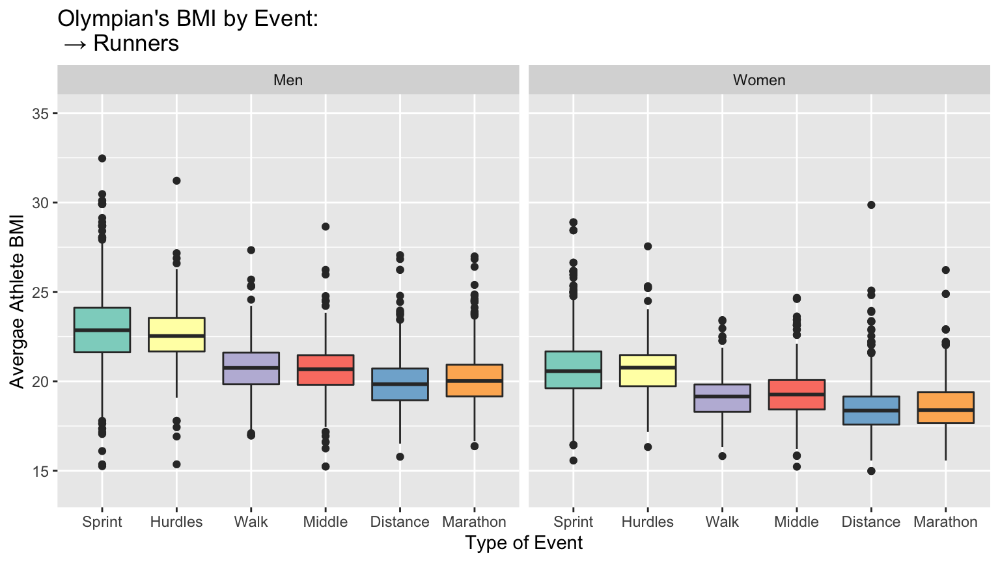
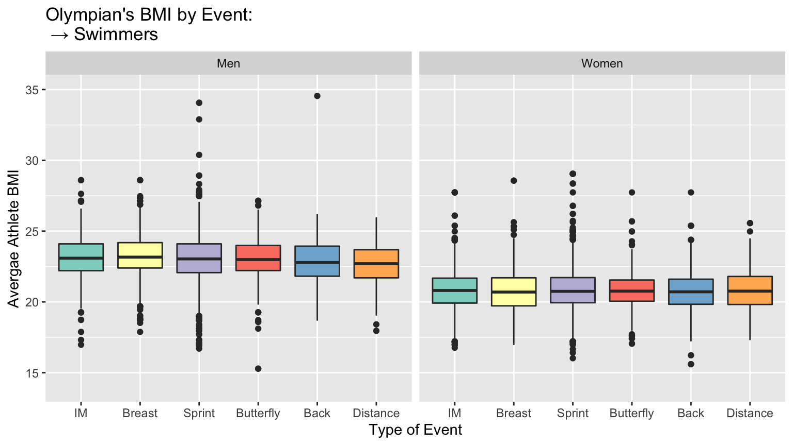
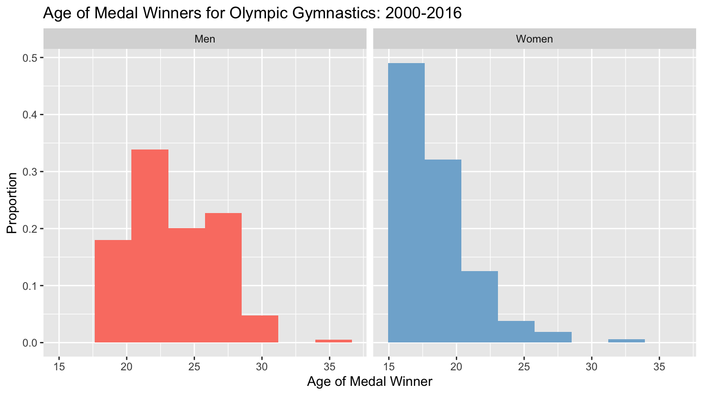

More Information
Chichi Wu and Megan Varnum
Last updated on 2019-12-15
SECTION NAME
Write your “more information” section here.
Average Age Overtime
 In looking at the average age of Olympians across time, an overall trend shows that male athletes are consistently older than female athletes across all three sports. The reason for why females peak earlier in age than males may be attributed to societal pressures that women face outside of sports, such as dating and starting a family. Additionally, for gymnastics, the priority for female athletes is flexibility, whereas for male athletes it is strength. Thus, a younger age demographic corresponds to higher flexibility in women. It can be noted that in recent years, from around 1980, the average age has been increasing across all sports. This perhaps is due to a shift in the dialogue around women and sports and a new preference for women to also exhibit exceptional strength. However, the age range is still very low, the average for gymnastics being around twenty in 2012. This brings up many ethical questions, especially in light of the #MeToo movement and the scandal within the US team. When young girls are expected to compete professionally, what kinds of protection are enacted?
In looking at the average age of Olympians across time, an overall trend shows that male athletes are consistently older than female athletes across all three sports. The reason for why females peak earlier in age than males may be attributed to societal pressures that women face outside of sports, such as dating and starting a family. Additionally, for gymnastics, the priority for female athletes is flexibility, whereas for male athletes it is strength. Thus, a younger age demographic corresponds to higher flexibility in women. It can be noted that in recent years, from around 1980, the average age has been increasing across all sports. This perhaps is due to a shift in the dialogue around women and sports and a new preference for women to also exhibit exceptional strength. However, the age range is still very low, the average for gymnastics being around twenty in 2012. This brings up many ethical questions, especially in light of the #MeToo movement and the scandal within the US team. When young girls are expected to compete professionally, what kinds of protection are enacted?
Swimming and Track BMI by Event
 Comparing the BMIs of runners and swimmers across event categories (distance, sprints, etc), we found significantly more consistency in swimmers. There appears to be a single ideal BMI for all swimmers, whereas a runner’s BMI is fine-tuned depending on their event. In runners, shorter events favor higher BMIs. Land athletes face a tradeoff between strength and endurance – although large muscles equate to more power, they require additional oxygen transport. Swimmers do not face the same dilemma because drag is the primary limitation to performance instead of weight.1
Age of Medalists in Gymnastics
#wrangling
athlete_gymnastics <- athlete_events %>%
filter(Sport == "Gymnastics")
gymnastics_medal_winners <- athlete_gymnastics %>%
filter(Medal == "Silver" | Medal == "Bronze" | Medal == "Gold") %>%
filter(Year > 1999) Given the age of the medalists in gymnastics, it is shown that the histograms are right skewed for both men and women. The skew for female gymnasts, however, is a lot more considerable. Thus, this shows that younger gymnasts tend to perform better overall, and younger female gymnasts significantly perform better and are preferred.
Hallman, Kevin. “Elite Swimmers Share Same Ideal BMI Across Different Race Distances.” SwimSwam, July 14th, 2018, https://swimswam.com/elite-swimmers-share-same-ideal-bmi-across-different-race-distances/↩